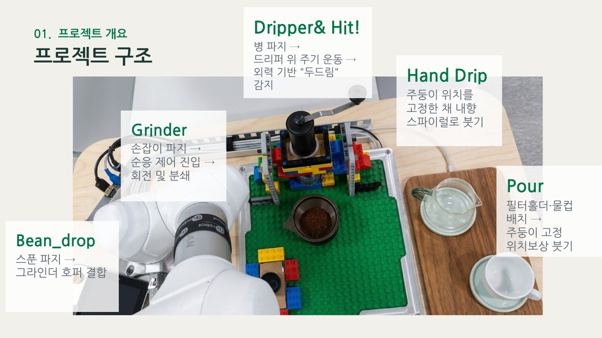
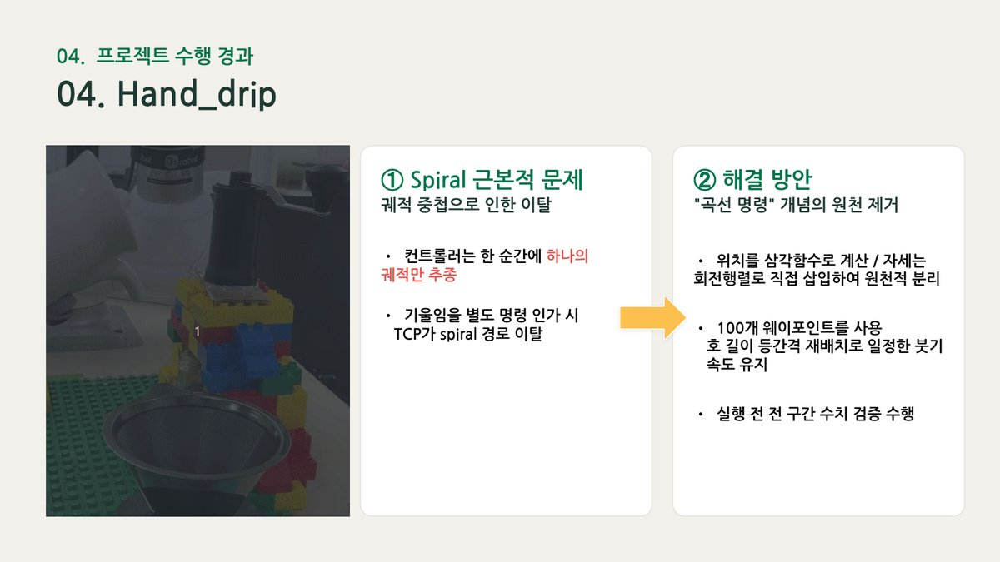
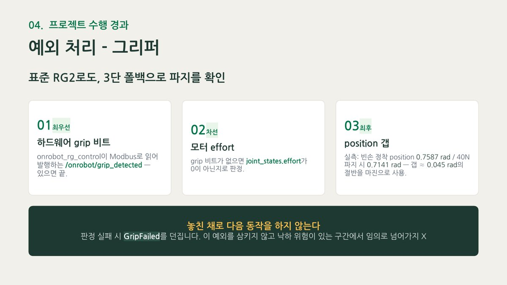

Last modified
한눈에 보기
1분 시연 영상
- 내 담당 — 그리퍼 파지 판정·예외 처리(공동작업): 파지 판정·이상 감시 · 실패 단계 재실행 / 작업 환경 도면
- 팀 결과 — 원두 계량 → 분쇄 → 필터 투입 → 나선 드립 → 서빙, 5단계 공정 자동화 · 최종 시연
- 조건 — 카메라 없음 · 교시 좌표 · 협동로봇 힘 센서와 그리퍼 접점 신호(물체를 잡았는지 알려 주는 신호)
- 주제 — 트레이 밸런싱 검증(7월 20~22일) → 핸드드립 커피 확정(7월 23일)
프로젝트 구현
팀은 카메라 없이 교시 좌표(로봇에 미리 가르쳐 저장한 위치)와 힘·접점 신호만으로 원두 계량, 분쇄, 필터 투입, 나선 드립, 서빙을 하나의 공정으로 이었습니다.
카메라 없이 이어지는 5단계 공정 (교시 좌표, 힘·접점 신호)

작업자가 컨트롤박스(로봇 제어기)의 버튼으로 원두를 고르면 로봇이 스푼으로 원두를 떠 그라인더(원두 분쇄기)에 넣고, 그라인더 손잡이를 잡아 돌려 원두를 갑니다. 진행 상황은 팀이 만든 웹 화면에 단계별로 표시됩니다.



나선 드립 — 나선 이동과 주전자 기울임을 한 동작으로 (경유점 경로)
팀은 나선 이동과 주전자 기울임을 하나의 연속 동작으로 묶어 로봇이 같은 나선 궤적으로 물을 붓게 했습니다.

그리퍼 파지 판정과 예외 처리 (잡힘 신호·손가락 위치·힘)
저는 그리퍼 파지 판정·예외 처리(공동작업)를 맡았습니다.

진행 과정 각 번호를 펼치면 사진과 함께 자세한 설명이 나옵니다
동기
- 과제ROS 2를 활용한 로봇 자동화 공정 구현
- 장비Doosan M0609 협동로봇 · OnRobot RG2 그리퍼 · 카메라 없음
- 주제 기준카메라 없이 구현 가능 · 실생활 적용 · 다양한 단계
트레이 밸런싱에서 핸드드립으로 주제 변경
팀 작업 참여처음 주제트레이 밸런싱(쟁반 위 컵의 무게중심 유지) — 7월 20~22일 검증, 저도 검증 코드 작성막힌 점기울일 때 힘 계산값 변화 해석 · 그리퍼·쟁반·물체 무게 분리 측정결정7월 23일 핸드드립 커피 자동화로 최종 주제 확정(팀)
트레이 밸런싱 사흘간 검증
과정에서 주어진 과제는 ROS 2를 활용한 로봇 자동화 공정 구현이었습니다. 팀은 먼저 트레이 밸런싱을 7월 20일부터 사흘간 검증했고, 저도 가능성을 검증하는 코드를 직접 짰습니다.
해석·측정하지 못한 힘과 무게중심
하지만 긴 그리퍼와 무거운 쟁반이 이어진 구조에서 쟁반을 기울일 때 힘 계산값이 달라지는 이유를 해석하지 못했고, 그리퍼·쟁반·물체의 무게와 무게중심 변화를 나누어 측정하지도 못했습니다. 힘 감지 원리와 관성을 다룰 이론적 배경이 부족하고 기간도 짧아, 확신 없이 추가 센서를 붙여 보완하기도 어려웠습니다.
카메라 없이 구현할 공정 후보 검토
팀은 카메라 없이 구현할 수 있는 공정 후보들을 검토한 끝에, 실생활에 적용할 수 있고 다양한 단계를 다룰 수 있는 핸드드립 커피로 7월 23일에 최종 주제를 확정했습니다.
평가 기준 표현과 멘토 질문
급하게 정한 주제라 팀은 바꾼 주제를 평가 기준에 맞게 어떻게 표현하고 협동로봇을 어떻게 프로그래밍할지 멘토에게 물었고, 이후 접촉 감지와 물체 잡힘 판단, 나선 동작 구현으로 빠르게 이어 갔습니다.
이 경험에서 구현 목표가 주어진 하드웨어와 일정 안에서 실제로 측정하고 제어할 수 있는 범위인지, 작은 검증 코드로 먼저 짚어보고 방향을 결정해야 한다는 일하는 방식을 배웠습니다.
구현 과정
물체 잡힘 판정과 이상 감시
계기깊게 물면 잡힘 신호가 뜨지 않음 → 실패로 읽으면 물체를 문 채 다시 집으러 감방법잡힘 신호 우선 · 신호가 없으면 손가락 위치·힘으로 대체 판정 · 신호가 1초 넘게 끊기면 로봇 정지 요청결과실제 로봇 시험에서 잡힘 판정 유지
잡힘 신호가 뜨지 않는 경우
카메라가 없어 물체를 잡았는지는 그리퍼 신호로만 판단해야 했습니다. 물체를 손가락 안쪽까지 깊게 물면 잡힘 신호가 뜨지 않았고, 이를 실패로 읽으면 로봇이 물체를 문 채 다시 집으러 갈 위험이 있었습니다.
드라이버와 판정 신호
저는 RG2 그리퍼용 오픈소스 드라이버와 작동 원리를 보며 닫힐 때 하드웨어에서 힘을 측정할 것이라는 가설을 세웠고, 판정에 쓸 신호(잡힘 신호, 손가락 위치, 힘)를 찾았습니다.
손가락 위치와 힘으로 대체 판정
최종 제출본에서는 잡힘 신호를 먼저 확인하고, 신호 데이터가 들어오지 않으면 손가락 위치와 힘으로 대체 판정하게 했습니다. 빈손이면 끝까지 닫히고 물체가 있으면 그 전에 멈추는 차이를 실기 실측값으로 확인해, 빈손 위치를 기준으로 삼았습니다.

이동 명령을 한 곳에서 감싸기
최종 제출본에서는 그리퍼 신호가 1초 넘게 끊기면 로봇 정지를 요청하는 감시도 제가 맡았습니다. 이동 명령마다 확인 코드를 넣으면 빠뜨리는 곳이 생기므로, 이동 명령을 한 곳에서 감싸 앞뒤로 신호 이상을 확인하고 이상 감지 뒤에는 다음 이동을 막았습니다.

실제 로봇 시험
실제 로봇 시험에서는 잡힘 판정이 기존처럼 동작했습니다.
개발본의 판정 불가 구분
깊게 물어 잡힘 신호가 없는데도 접촉 흔적이 남은 경우는, 제출 뒤 이어 간 개발본에서 '판정 불가'로 따로 떼어 다시 집지 않고 사람이 확인하게 했습니다. 잡았는데도 실패로 잘못 읽는 경우(오탐)를 줄이고, 조치가 필요할 때는 사람의 확인을 기다리게 하려는 것이었습니다.
이 과정을 거치며 센서 신호로 상태를 판정할 때는 신호가 애매해지는 경우부터 정리하고, 로봇을 움직이기 전에 확인할 기준부터 세워야 한다는 점을 배웠습니다.
실패 단계 재실행과 복구 분리
계기실패하면 공정 전체를 다시 시작 → 15초 가까운 나선 드립과 끝난 앞 단계까지 버림바꾼 구조실패한 단계만 처음부터 다시 실행나눈 역할현장 정리는 사람 · 재시도 여부는 작업자가 컨트롤박스 버튼으로
초기에 공정 전체를 다시 시작
초기에는 공정이 실패하면 프로그램을 끝내거나 전체를 다시 시작해, 15초 가까이 걸리는 나선 드립과 이미 끝난 앞 단계까지 버려야 했습니다. 그렇다고 로봇이 무엇을 들고 있는지 모르는 상태에서 자동으로 복구하면 더 위험하다고 판단했습니다.
사람 책임으로 명시한 현장 정리
그래서 저는 현장 정리(그리퍼를 껐다가 다시 켜는 것처럼 사람이 직접 해야 하는 조치)를 사람 책임으로 명시하고, 재시도와 중단은 작업자가 컨트롤박스 버튼으로 결정하게 했습니다.


실패한 단계만 다시 실행
공정 전체 대신 실패한 단계만 처음부터 다시 실행하도록 구조를 바꿨습니다.


이 경험으로 시스템이 자동으로 처리할 범위와 사람이 판단할 지점을 나누는 설계를 익혔습니다.
팀에서 일한 방식
- 팀 구성5인 팀 · 공정 단계별 분업 · 교시를 반복하며 각자 익숙해진 파트를 골라 맡음
- 소통매일 함께 작업하며 진행 상황·코드 공유 · 멘토에게 기능 구현·예외 처리 피드백
- 도구Slack · Notion · GitHub
- 교시카메라가 없어 거의 모든 좌표를 펜던트로 직접 교시 → 공정별 상대 이동과 좌표 변환으로 부담을 줄이려 함(팀)
- 실기 준비팀이 함께 정함 — 장비·네트워크 설정 · 재교시 기준 · 실행 전 점검
- 그라인더단기간 고정 구조물 설치 어려움 → 멘토와 상의 → 분쇄 중 사람이 그라인더를 잡고, 로봇이 손잡이를 잡는 조건을 엄밀하게 정해 공정 설계
본인 담당:
- 그리퍼 파지 판정·예외 처리(공동작업)
- 작업 환경 도면(SOLIDWORKS 3D 모델 바탕)
짧은 개발 기간과 잦은 변동으로 작업 환경 도면을 미리 정하고 시작하지는 못했습니다. 그래도 위치가 틀어질 때를 대비해, 저는 로봇 작업 영역과 공정 위치, 그리퍼 벌림 폭 등 위치와 치수를 규격화하는 작업 환경 도면을 공정 구성을 마친 뒤 프로젝트 기간 안에 한 장으로 정리했습니다.
코드가 어떤 환경에서 동작하는지 이해하도록 돕는 문서이며, 도면 치수가 코드의 교시 좌표와 그대로 맞지는 않습니다.

이 도면은 제가 SOLIDWORKS로 만든 3D 모델을 바탕으로 그렸습니다. 이미 꾸민 작업 환경을 보고 작업대와 공정 도구를 거꾸로 모델링(역설계)한 것이라 치수가 실제와 완전히 일치하지는 않습니다. 작업 영역과 도구 형상을 3차원으로 직접 옮긴 작업이라 함께 싣습니다.


배운 점
- 기준구현 목표가 주어진 장비와 일정 안에서 측정·제어할 수 있는 범위인지, 작은 검증 코드로 먼저 짚어 보고 방향을 정한다
- 깨달음센서 신호로 상태를 판정할 때는 신호가 애매해지는 경우부터 정리하고, 로봇을 움직이기 전에 확인할 기준부터 세워야 한다
- 실물빈손일 때와 물체를 잡았을 때의 실측값처럼 실물에서 확인한 값으로 동작 기준을 세운다
- 아쉬움작업 환경 도면을 사후에 정리하며, 처음부터 도면을 정하고 시작했다면 좋았겠다
기술 상세
팀 발표 자료(세부 기술): 발표 자료(PDF, 46쪽)
발표 자료 목차·키워드: 프로젝트 구조 p10 · 팀 구성·역할 p12 · 수행 일정 p13 · 나선 드립 p18–24 · 사용자 화면 p26–29 · 관리자 화면 p30 · 그리퍼 파지 판정 p32–34 · 그리퍼 신호 예외 처리 p36–42 · Flow Chart p45 · 노드 구성 p46
코드 근거
Rokey_cobot1 — 팀 최종 코드(README가 코드 구성과 작업 환경 도면을 설명합니다)